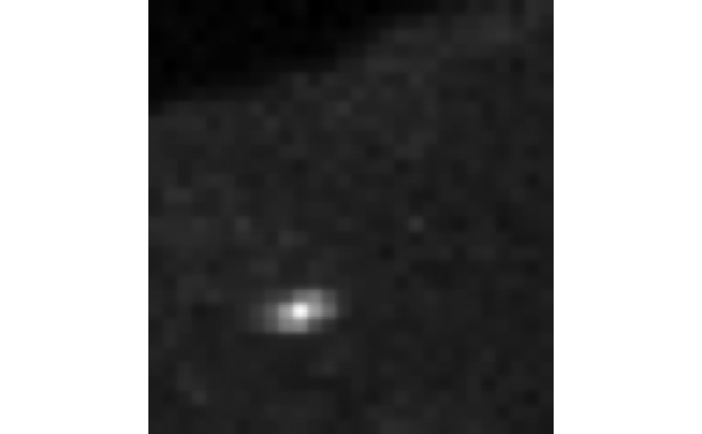
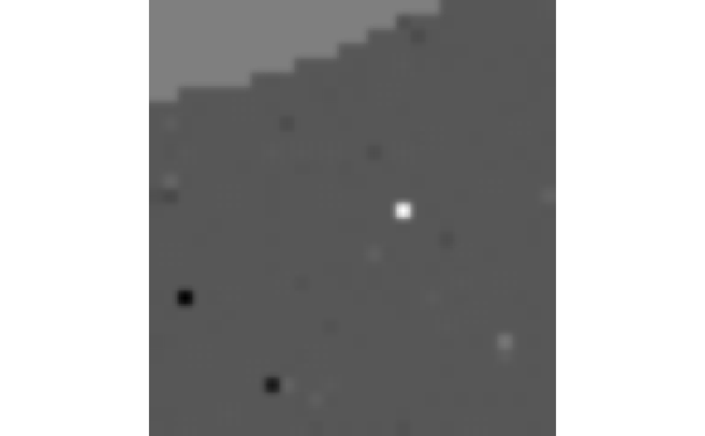

Given a time stack of images and two channels, calculate the
cross-correlated number of those two channels for each pixel.
cc_number(img, ch1 = 1, ch2 = 2, thresh = NULL, detrend = FALSE,
quick = FALSE, filt = NULL, parallel = FALSE)
Arguments
| img |
A 4-dimensional array of images indexed by img[y, x, channel, frame] (an object of class ijtiff::ijtiff_img). The image to perform the
calculation on. To perform this on a file that has not yet been read in,
set this argument to the path to that file (a string). |
| ch1 |
A natural number. The index of the first channel to use. |
| ch2 |
A natural number. The index of the second channel to use. |
| thresh |
Do you want to apply an intensity threshold prior to
calculating cross-correlated number (via
autothresholdr::mean_stack_thresh())? If so, set your thresholding method
here. If this is a single value, that same threshold will be applied to
both channels. If this is a length-2 vector or list, then these two
thresholds will be applied to channels 1 and 2 respectively. A value of
NA for either channel gives no thresholding for that channel. |
| detrend |
Detrend your data with detrendr::img_detrend_rh(). This is
the best known detrending method for brightness analysis. For more
fine-grained control over your detrending, use the detrendr package. To
detrend one channel and not the other, specify this as a length 2 vector. |
| quick |
FALSE repeats the detrending procedure (which has some inherent
randomness) a few times to hone in on the best detrend. TRUE is quicker,
performing the routine only once. FALSE is better.
|
| filt |
Do you want to smooth (filt = 'smooth') or median (filt = 'median') filter the cross-correlated number image using smooth_filter()
or median_filter() respectively? If selected, these are invoked here with
a filter radius of 1 and with the option na_count = TRUE. A value of NA
for either channel gives no thresholding for that channel. If you want to
smooth/median filter the cross-correlated number image in a different way,
first calculate the cross-correlated numbers without filtering (filt = NULL) using this function and then perform your desired filtering routine
on the result. |
| parallel |
Would you like to use multiple cores to speed up this
function? If so, set the number of cores here, or to use all available
cores, use parallel = TRUE. |
Value
A numeric matrix, the cross-correlated number image.
Examples
#> Reading two_ch.tif: an 8-bit, 30x28 pixel image of unsigned
#> integer type with 2 channels and 100 frames . . .
#> � Done.

